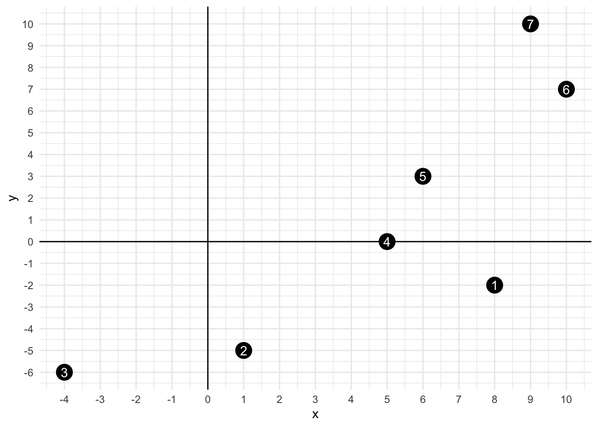
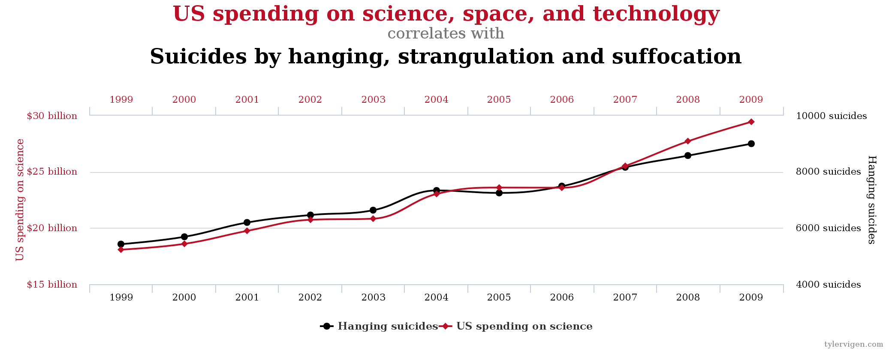
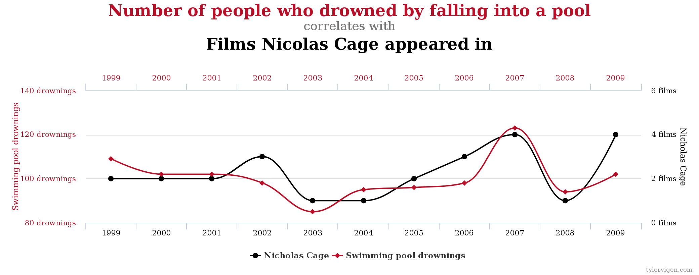
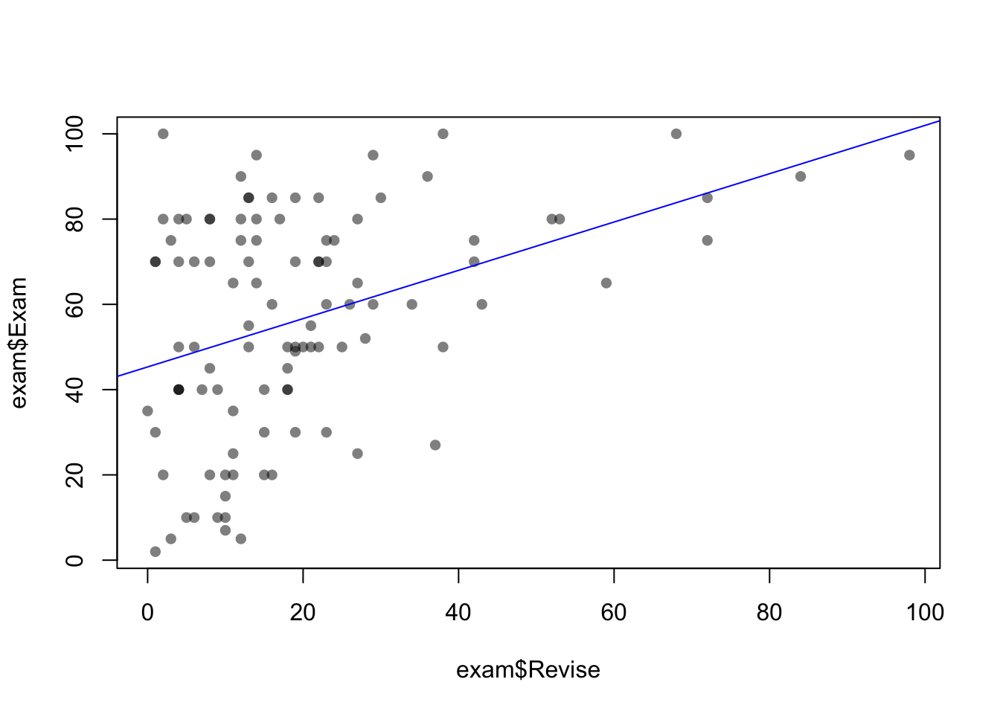
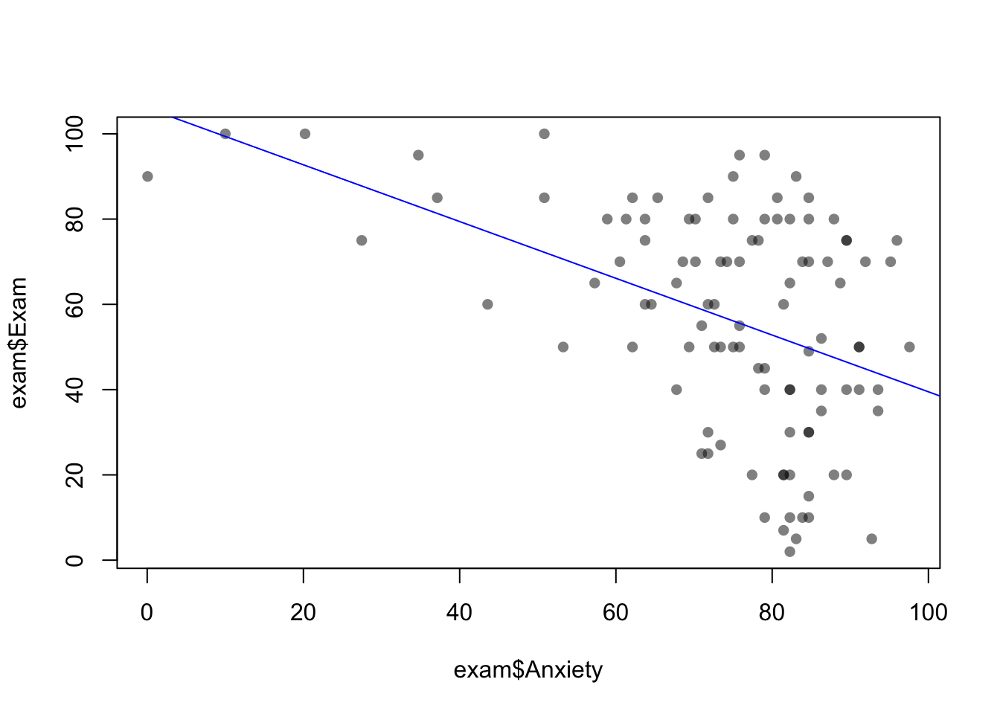
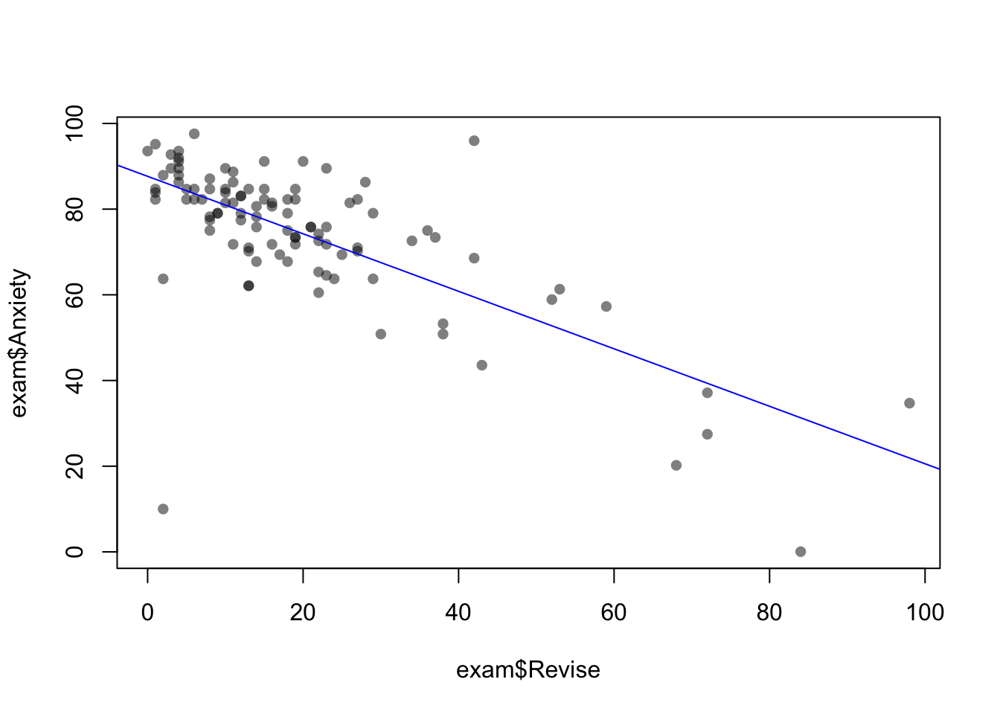
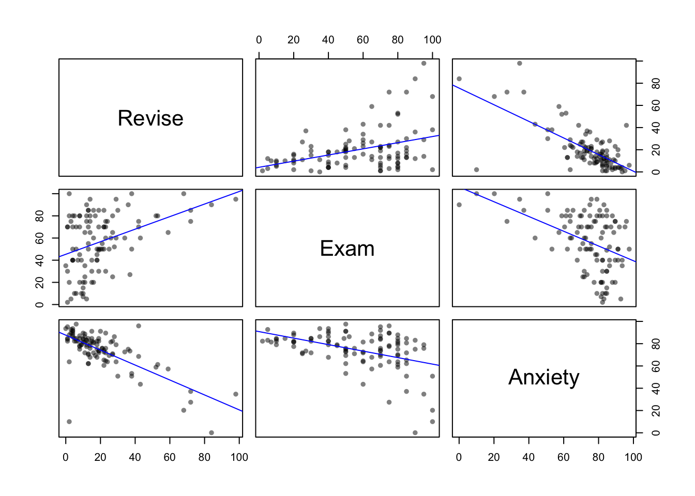

Allgemeines
Oft ist es interessant zu fragen, ob zwei Variablen eine gegenseitige Abhängigkeit zeigen. Man möchte also wissen, ob sich die beiden Größen ähnlich verhalten oder nicht – wenn die eine Variable zunimmt, nimmt dann die andere auch zu? Oder ist es genau umgekehrt und sie nimmt dann immer ab? Die Korrelation ist ein einfaches und populäres Maß, um diese Fragestellungen zu beantworten.
Dabei ist es aber wichtig zu wissen, dass kein kausaler Zusammenhang zwischen den beiden Variablen bestehen muss. Folgende Beispiele von Spurious Correlations illustrieren die Gefahr der fehlerhaften Interpretation von Korrelationen. Im ersten Beispiel werden die Ausgaben für den Bereich Wissenschaft, Raumfahrt und Technik der USA im Zeitraum 1999–2009 dargestellt. Gleichzeitig werden die Anzahl der Selbstmorde durch Hängen, Strangulieren und Erstickung im selben Zeitraum gezeigt. Man sieht, dass beide Kurven einen sehr ähnlichen Verlauf haben, und der Korrelationskoeffizient (dazu später mehr) ist mit \(r=0.998\) extrem hoch:

Das zweite Beispiel zeigt den Zusammenhang zwischen der Anzahl an Personen, die in einen Pool gefallen und ertrunken sind und der Anzahl an Filmen mit Nicolas Cage im Zeitraum 1999–2009. Auch hier kann man einen schönen Zusammenhang erkennen, welcher einen recht hohen Korrelationskoeffizienten von \(r=0.666\) aufweist:

Diese Beispiele sollen verdeutlichen, dass Korrelation nicht automatisch einen kausalen Zusammenhang darstellt (“correlation is not causation”). Denn offensichtlich sind die gezeigten Beispiele rein zufällige Korrelationen, die in keinerlei kausalem Zusammenhang stehen.
Produkt-Moment-Korrelation (Pearson-Korrelation)
Die Produkt-Moment-Korrelation \(r\) (auch Pearson-Korrelation genannt) ist ein Maß für den Grad des linearen Zusammenhangs zweier intervallskalierter Variablen. Die Korrelation nimmt Werte zwischen −1 und 1 an und wird aus den Varianzen und der Kovarianz beider Variablen berechnet.
Die Varianz einer Variablen \(x\) ist wie folgt definiert:
\[\mathrm{Var}(x) = \frac{1}{N-1} \sum_{i=1}^N (x_i - \bar{x})^2\]
Hier ist \(\bar{x}\) der Mittelwert über alle \(N\) Werte (welche als \(x_i\) bezeichnet werden), also
\[\bar{x} = \frac{1}{N} \sum_{i=1}^N x_i.\]
Alternativ kann man die Varianz auch so schreiben (das Quadrat wird explizit als Multiplikation angeschrieben):
\[\mathrm{Var}(x) = \frac{1}{N-1} \sum_{i=1}^N (x_i - \bar{x})(x_i - \bar{x})\]
Die Varianz beschreibt, wie stark die Datenpunkte um deren Mittelwert variieren (streuen). Dementsprechend ist die Kovarianz zwischen zwei Variablen \(x\) und \(y\) definiert als
\[\mathrm{Cov}(x, y) = \frac{1}{N-1} \sum_{i=1}^N (x_i - \bar{x})(y_i - \bar{y}).\]
Die Kovarianz beschreibt, wie stark die beiden Variablen gemeinsam um den jeweiligen Mittelwert variieren. Eine positive Kovarianz bedeutet, dass beide Variablen gleichsinnig variieren (d.h. wenn eine Variable größer als ihr Mittelwert ist, dann ist die andere auch größer). Umgekehrt bedeutet eine negative Kovarianz, dass beide Variablen gegensinnig variieren (ist eine Variable größer als ihr Mittelwert, dann ist die andere Variable kleiner).
Die Kovarianz ist kein standardisiertes Maß, d.h. man kann nicht einfach zwei Kovarianzen aus unterschiedlichen Messreihen miteinander vergleichen, da sie von der Skalierung der beiden Variablen abhängt. Die Pearson-Korrelation standardisiert nun die Kovarianz mit den Varianzen der einzelnen Variablen und stellt somit sicher, dass die Korrelation im Wertebereich zwischen −1 und 1 liegt:
\[r = \frac{\mathrm{Cov}(x, y)}{\sqrt{\mathrm{Var}(x) \mathrm{Var}(y)}}\]
Rechenbeispiel
Versuchen wir, die Korrelation mit den Formeln für zwei Beispielvektoren \(x\) und \(y\) zu berechnen:
\[ \begin{aligned} x &= (8, 1, -4, 5, 6, 10, 9) \\ y &= (-2, -5, -6, 0, 3, 7, 10) \end{aligned} \]
Wir können diese sieben Datenpunkte in einem Scatterplot visualisieren:
Zunächst berechnen wir die beiden Mittelwerte:
\[ \begin{aligned} \bar{x} &= \frac{1}{7} \cdot (8 + 1 - 4 + 5 + 6 + 10 + 9) = 5 \\ \bar{y} &= \frac{1}{7} \cdot (-2 - 5 - 6 + 0 + 3 + 7 + 10) = 1 \end{aligned} \]
Damit können wir die Varianzen berechnen:
\[ \begin{aligned} \text{Var}(x) = \frac{1}{6} \cdot \Bigl[ & (8 - 5)^2 + (1 - 5)^2 + (-4 - 5)^2 \\ &+ (5 - 5)^2 + (6 - 5)^2 + (10 - 5)^2 + (9 - 5)^2 \Bigr] = 24.\dot{6} \\ \text{Var}(y) = \frac{1}{6} \cdot \Bigl[ & (-2 - 1)^2 + (-5 - 1)^2 + (-6 - 1)^2 \\ &+ (0 - 1)^2 + (3 - 1)^2 + (7 - 1)^2 + (10 - 1)^2 \Bigr] = 36 \end{aligned} \]
Schließlich berechnen wir die Kovarianz:
\[ \begin{aligned} \text{Cov}(x, y) = \frac{1}{6} \cdot \Bigl[ & (8 - 5) \cdot (-2 -1) + (1 - 5) \cdot (-5 - 1) \\ &+ (-4 - 5) \cdot (-6 - 1) + (5 - 5) \cdot (0 - 1) \\ &+ (6 - 5) \cdot (3 - 1) + (10 - 5) \cdot (7 - 1) + (9 - 5) \cdot (10 - 1) \Bigr] = 24.\dot{3} \end{aligned} \]
Um die Pearson-Korrelation zu erhalten, müssen wir noch diese Größen laut Formel verarbeiten und erhalten somit:
\[r = \frac{24.\dot{3}}{\sqrt{24.\dot{6} \cdot 36}} = 0.8165732\]
Signifikanz
Meist wird nach der Berechnung der Korrelation ein Test durchgeführt, welcher prüft, ob die erhaltene Korrelation signifikant von der Nullhypothese (“es existiert keine Korrelation, d.h. die Korrelation ist 0”) abweicht. Da die Stichprobenverteilung der Korrelation keine Normalverteilung aufweist, kann man den Wert von \(r\) mit Hilfe der Fisher-Transformation in eine Normalverteilung mit Mittelwert
\[z_r = \frac{1}{2} \ln \frac{1 + r}{1 - r} = \text{arctanh}(r)\]
umwandeln. Der Standardfehler von \(z_r\) beträgt dabei:
\[\mathrm{SE}(z_r) = \frac{1}{\sqrt{N - 3}}\]
Nun kann man den erhaltenen Wert von \(z_r\) durch den Standardfehler dividieren und das Ergebnis dann mit Werten aus einer Tabelle der Standardnormalverteilung vergleichen. So erhält man dann den \(p\)-Wert (siehe auch hier).
Hinweis
Der \(p\)-Wert gibt hier die Wahrscheinlichkeit an, dass man eine Korrelation erhält, die mindestens so groß ist wie die beobachtete, unter der Annahme, dass die Nullhypothese zutrifft (also dass die Korrelation 0 ist).
Ein kleiner \(p\)-Wert bedeutet also, dass der beobachtete Wert unter der Nullhypothese sehr unwahrscheinlich ist. Daher entscheidet man sich in solchen Situationen, die Nullhypothese zu verwerfen und die Korrelation als signifikant (unterschiedlich von 0) zu betrachten.
Betrachten wir dazu ein Beispiel zur Veranschaulichung der Berechnung des \(p\)-Wertes sowie des Konfidenzintervalls für eine gegebene Pearson-Korrelation.
Beispiel
Gegeben sei eine Korrelation \(r = 0.25\) berechnet aus einer Stichprobe der Größe \(N = 40\):
r = 0.25
N = 40Weiters geben wir ein Signifikanzniveau von \(\alpha = 0.05\) vor (das ist der Schwellwert für den \(p\)-Wert, ab dem wir eine Korrelation als signifikant betrachten wollen):
alpha = 0.05Wir möchten nun wissen, ob die Korrelation \(r = 0.25\) bei einem gegebenen Signifikanzniveau signifikant unterschiedlich von 0 ist. Dazu berechnen wir den \(p\)-Wert und das Konfidenzintervall. Um dies berechnen zu können, müssen wir zuerst die Fisher-Transformation von \(r\) berechnen:
(z = atanh(r))[1] 0.2554128Jetzt können wir den Standardfehler berechnen:
(se_z = 1 / sqrt(N - 3))[1] 0.164399Den \(p\)-Wert erhält man nun, indem man die Wahrscheinlichkeit berechnet, dass man in einer Standardnormalverteilung Werte größer als \(z \, / \, \text{SE}(z) \approx 1.55\) erhält. Dazu sieht man entweder in einer Tabelle der Standardnormalverteilung nach oder man berechnet diesen Wert mit entsprechenden Funktionen in R (der Faktor 2 wird benötigt, da wir keine gerichtete Hypothese haben):
(p = 2 * (1 - pnorm(z / se_z)))[1] 0.1202762Dieser \(p\)-Wert ist größer als \(\alpha = 0.05\), d.h. wir können die Nullhypothese (keine Korrelation) nicht verwerfen.
Das Konfidenzintervall um \(z\) erhält man, indem man zum gegebenen Wert \(z\) das Produkt aus dem Signifikanzniveau entsprechenden Quantil (ca. 1.96 für \(\alpha = 0.05\)) mit dem Standardfehler addiert bzw. subtrahiert:
cl_z = z - qnorm(1 - alpha/2) * se_z
cu_z = z + qnorm(1 - alpha/2) * se_z
c(cl_z, z, cu_z)[1] -0.06680328 0.25541281 0.57762891Man beachte, dass es sich bei allen drei Werten um Fisher-transformierte Werte handelt. Möchte man ein Konfidenzintervall um die ursprüngliche Korrelation \(r\) angeben, so muss man diese drei Werte noch rücktransformieren (tanh ist die Umkehrfunktion von atanh):
cl_r = tanh(cl_z)
cu_r = tanh(cu_z)
c(cl_r, r, cu_r)[1] -0.06670409 0.25000000 0.52093993
Hinweis
Das Konfidenzintervall gibt an, in welchem Bereich der wahre Wert der Korrelation mit einer gegebenen Sicherheit (Konfidenz) liegt. Die Konfidenz ist nicht die Wahrscheinlichkeit, dass der wahre Wert in dem berechneten Intervall liegt – denn der wahre Wert ist entweder in dem Intervall oder nicht. Wenn man viele Stichproben ziehen würde und damit jedes Mal ein Konfidenzintervall berechnen würde, dann würde im Falle eines 95%-Konfidenzintervalls in 95% der berechneten Fälle der wahre Wert in dem Intervall liegen.
Tipp
Die Tatsache, dass die Korrelation \(r=0.25\) bei einer Stichprobe von \(N=40\) nicht signifikant unterschiedlich von Null ist (\(p=0.12\)) kann man auch daran erkennen, dass das 95%-Konfidenzintervall den Wert 0 (also die Nullhypothese) enthält. Das bedeutet also, dass wir die Nullhypothese (keine Korrelation) nicht verwerfen können.
Nicht-parametrische Korrelationskoeffizienten
Spearman Rangkorrelationskoeffizient
Im Gegensatz zur Pearson-Korrelation misst der Spearman Rangkorrelationskoeffizient \(\rho\) nicht nur lineare Zusammenhänge zwischen zwei Variablen, sondern der Zusammenhang kann eine beliebige monotone (nicht-lineare) Funktion sein. Die beiden Variablen müssen auch nicht intervallskaliert sein, d.h. so kann man auch ordinalskalierte Daten miteinander korrelieren.
Im Prinzip berechnet man die Spearman-Korrelation, indem man die Daten \(x\) und \(y\) vorher in Ränge konvertiert und dann die Pearson-Korrelation berechnet. Zur Berechnung kann folgende vereinfachte Formel verwendet werden:
\[\rho = 1 - \frac{6 \sum d_i^2}{N \cdot (N^2 - 1)}\] Hier ist \(d_i\) die Differenz der Ränge einer Beobachtung.
Kendall Rangkorrelationskoeffizient
Bei kleinen Stichproben und relativ großer Anzahl an gleichen Rängen liefert oft der Kendall Rangkorrelationskoeffizient \(\tau\) bessere Ergebnisse. Hier werden nicht die Differenzen zwischen den Rängen betrachtet (also die Abstände der Ränge zwischen beiden Variablen), sondern ob es Unterschiede in den Rängen zwischen Datenpaaren gibt oder nicht.
Korrelationen mit R berechnen
Korrelationskoeffizienten kann man mit den folgenden drei Funktionen berechnen: cor(), cor.test() und rcorr(). Die ersten beiden Funktionen sind Teil von R, die Funktion rcorr() muss mit dem Hmisc-Paket geladen werden.
library(Hmisc)Die drei Funktionen haben unterschiedliche Features, d.h. welche Funktion man benutzt ist abhängig von den benötigten Eigenschaften, welche in nachfolgender Tabelle zusammengefasst sind (“CI” steht für Konfidenzintervall, “Mehrfach” bedeutet, dass Korrelationen zwischen mehr als zwei Variablen paarweise berechnet werden können).
| Pearson | Spearman | Kendall | \(p\)-Werte | CI | Mehrfach | |
|---|---|---|---|---|---|---|
cor |
x | x | x | x | ||
cor.test |
x | x | x | x | x | |
rcorr |
x | x | x | x |
Funktion cor()
Die Funktion cor() ruft man wie folgt auf:
cor(x, y, method="pearson")Hier übergibt man zwei Vektoren und spezifiziert, welche Korrelation berechnet werden soll (standardmäßig wird die Pearson-Korrelation berechnet). Wenn x ein Data Frame mit mindestens zwei Spalten ist, kann man y weglassen – dann werden automatisch die Korrelationen zwischen allen Spaltenpaaren berechnet.
Funktion cor.test()
Der Aufruf der Funktion cor.test() ist sehr ähnlich:
cor.test(x, y, alternative="t", method="pearson", conf.level=0.95)Hier kann man die Form der Alternativhypothese ("two-sided", "greater", "less") sowie das Konfidenzniveau angeben. Diese Funktion kann nur mit genau zwei Vektoren umgehen.
Funktion rcorr()
Die Funktion rcorr() verwendet man wie folgt:
rcorr(x, y, type="pearson")Wie bei den anderen Funktionen sind x und y Vektoren. Weiters ist es wie bei cor() möglich, nur das Argument x anzugeben, wenn dieses eine Matrix mit mindestens zwei Spalten ist.
Beispiel
Am besten können die drei Funktionen anhand eines Beispiels veranschaulicht werden. Dazu laden wir einen (fiktiven) Datensatz exam.dat über Prüfungsangst:
library(readr)
(exam = read_tsv("exam.dat"))# A tibble: 103 × 5
Code Revise Exam Anxiety Gender
<dbl> <dbl> <dbl> <dbl> <chr>
1 1 4 40 86.3 Male
2 2 11 65 88.7 Female
3 3 27 80 70.2 Male
4 4 53 80 61.3 Male
5 5 4 40 89.5 Male
6 6 22 70 60.5 Female
7 7 16 20 81.5 Female
8 8 21 55 75.8 Female
9 9 25 50 69.4 Female
10 10 18 40 82.3 Female
# ℹ 93 more rowsEs ist hilfreich, die Daten zuerst einmal grafisch darzustellen. Für den Zusammenhang zwischen zwei Variablen bietet sich ein Scatterplot (inklusive Regressionsgeraden) an – so kann man die Korrelation direkt visualisieren. Wir können eine solche Grafik zunächst einmal separat für alle drei Kombinationen erzeugen:
plot(exam$Revise, exam$Exam, pch=16, col=rgb(0, 0, 0, 0.5))
abline(lm(exam$Exam ~ exam$Revise), col="blue")
plot(exam$Anxiety, exam$Exam, pch=16, col=rgb(0, 0, 0, 0.5))
abline(lm(exam$Exam ~ exam$Anxiety), col="blue")
plot(exam$Revise, exam$Anxiety, pch=16, col=rgb(0, 0, 0, 0.5))
abline(lm(exam$Anxiety ~ exam$Revise), col="blue")
Tipp
Bei mehreren Variablen (wie in diesem Beispiel) kann man die Funktion pairs() verwenden, um alle paarweisen Scatterplots gleichzeitig darzustellen:
pairs(exam[, 2:4])
Möchte man auch Regressionsgeraden einzeichnen, kann man eine (anonyme) Funktion als panel-Argument übergeben:
pairs(
exam[2:4],
panel=function(x, y) {
points(x, y, pch=16, col=rgb(0, 0, 0, 0.5))
abline(lm(y ~ x), col="blue")
}
)
Pearson-Korrelation
Nun berechnen wir die Pearson-Korrelationen zwischen den drei Variablen Exam, Anxiety und Revise:
cor(exam[, c("Exam", "Anxiety", "Revise")]) Exam Anxiety Revise
Exam 1.0000000 -0.4409934 0.3967207
Anxiety -0.4409934 1.0000000 -0.7092493
Revise 0.3967207 -0.7092493 1.0000000Man kann aus dieser Korrelationsmatrix direkt die einzelnen Koeffizienten für alle Variablenpaare ablesen. Die Diagonale beinhaltet die Korrelationen der Variablen mit sich selbst und besteht daher aus lauter Werten, die exakt gleich 1 sind. Außerdem ist es egal, ob man die Korrelationen in dem Dreieck unter der Diagonale oder über der Diagonale abliest, da die Korrelationsmatrix symmetrisch ist (die Korrelation zwischen “Exam” und “Revise” ist dieselbe wie zwischen “Revise” und “Exam” – die Korrelation misst ja keine kausalen Zusammenhänge).
Möchte man jedoch auch \(p\)-Werte, muss man die Funktion rcorr() verwenden. Diese Funktion erwartet die Daten jedoch nicht als Data Frame, sondern als Matrix. Daher müssen die Daten beim Aufruf der Funktion in eine Matrix umgewandelt werden:
rcorr(as.matrix(exam[, c("Exam", "Anxiety", "Revise")])) Exam Anxiety Revise
Exam 1.00 -0.44 0.40
Anxiety -0.44 1.00 -0.71
Revise 0.40 -0.71 1.00
n= 103
P
Exam Anxiety Revise
Exam 0 0
Anxiety 0 0
Revise 0 0 Zusätzlich zur Korrelationsmatrix bekommt man auch die \(p\)-Werte geliefert. In diesem Beispiel sind alle Korrelationen signifikant, da die \(p\)-Werte sehr klein sind (gerundet Null).
Wenn man auch Konfidenzintervalle benötigt, muss man die Funktion cor.test() verwenden. Diese Funktion unterstützt aber nur zwei Variablen, d.h. bei mehreren Variablen muss man die Funktion mehrmals aufrufen, um alle paarweisen Korrelationen zu erhalten.
cor.test(exam$Anxiety, exam$Exam)
Pearson's product-moment correlation
data: exam$Anxiety and exam$Exam
t = -4.938, df = 101, p-value = 3.128e-06
alternative hypothesis: true correlation is not equal to 0
95 percent confidence interval:
-0.5846244 -0.2705591
sample estimates:
cor
-0.4409934 Bestimmtheitsmaß \(R^2\)
Wenn man den Korrelationskoeffizienten \(r\) quadriert, erhält man das Bestimmtheitsmaß \(R^2\). Es gibt an, wie viel Varianz in einer Variablen von der zweiten erklärt werden kann (wobei auch hier wieder gilt, dass dies keine Aussage über Kausalität ist). Es ist üblich, die Korrelation mit dem Kleinbuchstaben \(r\) zu bezeichnen, für das Bestimmtheitsmaß verwendet man aber einen Großbuchstaben \(R^2\).
\[R^2 = r^2\]
cor(exam[, c("Exam", "Anxiety", "Revise")])^2 Exam Anxiety Revise
Exam 1.0000000 0.1944752 0.1573873
Anxiety 0.1944752 1.0000000 0.5030345
Revise 0.1573873 0.5030345 1.0000000Spearman Rangkorrelationskoeffizient
Für die Beispieldaten können wir analog auch die Spearman-Korrelation bestimmen:
cor(exam[, c("Exam", "Anxiety", "Revise")], method="spearman") Exam Anxiety Revise
Exam 1.0000000 -0.4046141 0.3498948
Anxiety -0.4046141 1.0000000 -0.6219694
Revise 0.3498948 -0.6219694 1.0000000rcorr(as.matrix(exam[, c("Exam", "Anxiety", "Revise")]), type="spearman") Exam Anxiety Revise
Exam 1.00 -0.40 0.35
Anxiety -0.40 1.00 -0.62
Revise 0.35 -0.62 1.00
n= 103
P
Exam Anxiety Revise
Exam 0e+00 3e-04
Anxiety 0e+00 0e+00
Revise 3e-04 0e+00 cor.test(exam$Revise, exam$Exam, method="spearman")Warning in cor.test.default(exam$Revise, exam$Exam, method = "spearman"): Cannot compute exact p-value with ties
Spearman's rank correlation rho
data: exam$Revise and exam$Exam
S = 118387, p-value = 0.0002913
alternative hypothesis: true rho is not equal to 0
sample estimates:
rho
0.3498948 Kendall Rangkorrelationskoeffizient
Die Funktion cor.test() gibt im vorigen Beispiel eine Warnung aus, dass der berechnete \(p\)-Wert nicht exakt ist, da die Daten gleiche Ränge beinhalten. In solchen Fällen ist daher der Kendall-Korrelationskoeffizient die bessere Wahl:
cor.test(exam$Revise, exam$Exam, method="kendall")
Kendall's rank correlation tau
data: exam$Revise and exam$Exam
z = 3.8034, p-value = 0.0001427
alternative hypothesis: true tau is not equal to 0
sample estimates:
tau
0.2633259 Übungen
Übung 1
Im theoretischen Teil der Übung haben wir in einem Beispiel die Signifikanz einer Korrelation \(r = 0.25\) bei einer Stichprobengröße von \(N = 40\) berechnet. Diese war mit \(p = 0.12\) nicht signifikant.
- Welche Stichprobengröße \(N\) müssten Sie mindestens wählen, um ein mit \(\alpha = 0.05\) signifikantes Ergebnis zu erhalten?
- Ab welcher Stichprobengröße wird sogar eine sehr kleine Korrelation von \(r = 0.05\) signifikant?
Sie können dieses Beispiel durch Probieren lösen, indem Sie die Stichprobengröße schrittweise verändern (vergrößern) und sich den zugehörigen \(p\)-Wert ausrechnen.
Übung 2
In dieser Einheit haben wir die Korrelation zwischen \(x = (8, 1, -4, 5, 6, 10, 9)^T\) und \(y = (-2, -5, -6, 0, 3, 7, 10)^T\) händisch berechnet. Berechnen Sie nun mit Hilfe von R die Pearson-Korrelation zwischen \(x\) und \(y\). Geben Sie außerdem das 99%-Konfidenzintervall sowie den \(p\)-Wert an! Ist diese Korrelation signifikant bei einem Signifikanzniveau von \(\alpha = 0.01\)?
Übung 3
Verwenden Sie die Beispieldaten mtcars und analysieren Sie den Zusammenhang zwischen den Variablen mpg, disp und hp. Stellen Sie den Zusammenhang zwischen den Variablenpaaren grafisch dar, und berechnen Sie danach Pearson- und Spearman-Korrelationen!
Übung 4
In der Datei pm10.csv finden Sie die monatlichen Feinstaubwerte PM10 von zwei Messstationen in Graz im Zeitraum Februar 2006 bis Mai 2016. Führen Sie folgende Analysen durch:
- Erstellen Sie eine Grafik, in der Sie den Verlauf der PM10-Konzentration von beiden Messstationen über die Zeit darstellen.
- Erstellen Sie eine Grafik, in der Sie den Zusammenhang zwischen den beiden Messstationen darstellen.
Berechnen Sie abschließend die Pearson-Korrelation zwischen den Daten beider Messstationen inklusive Konfidenzinterval sowie \(p\)-Wert. Wie viel Varianz der einen Variable kann durch die andere Variable erklärt werden?
Hinweis
Wandeln Sie die Spalte Datum nach dem Einlesen in einen Datums-Typ um. Für die gleichzeitige Darstellung der beiden Zeitverläufe können Sie zuerst eine Liniengrafik einer Variable erzeugen und dann mit der Funktion lines() den zweiten Zeitverlauf mit einer anderen Farbe hinzufügen.
Wenn Sie die Funktion cor() zur Berechnung der Korrelation zwischen den beiden Variablen verwenden möchten, können Sie fehlende Werte in jeder der beiden Variablen mit dem Argument use="complete.obs" ausschließen.
Übung 5
Berechnen Sie die Korrelation der Schnabellänge (bill_length_mm) mit der Schnabeltiefe (bill_depth_mm) im Datensatz penguins (aus dem Paket palmerpenguins). Berechnen Sie außerdem diese Korrelation für jede Spezies separat! Was stellen Sie fest?